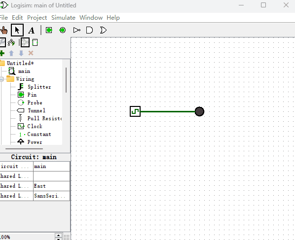

初探Logisim
如下图所示，我们先绘制一个最简单的电路结构，它是由一个“时钟信号发生器”和一个“LED发光二极管”用导线连接而成。当我们用“手势鼠标”去点击“时钟信号发生器”时，它输出的信号就会在高电平和低电平之间来回切换，而当“LED发光二极管”接收到高电平时，就会发光变成红色，接收到低电平时，就不发光变成灰色。这看起来是不是很像通过你家墙上的电源开关来控制屋内灯泡发光的过程？如果你对电路知识不了解的话，你可以把“LED发光二极管”当作灯泡，高电平理解成带电，低电平理解成断电。这样当灯泡带电时就会发光，断电后就会熄灭。
熟悉了如何在Logisim软件里画电路图后，我们也可以通过键盘上的“上下左右”按键来调整电子元件在电路图上面的摆放角度，如下图所示，从而在今后复杂的电路中做到美化电路图的效果。

我们也可以用导线连接多个电子元件。如下图所示，我们使用1个“时钟信号发生器”来控制2个“LED发光二极管”的发光效果。
有的时候，为了方便，我们只想要一个高电平或者低电平输出器，这时候我们可以使用“常量发生器”来替代“时钟信号发生器”，如下图所示。
看到这里，我想你已经知道了“常量发生器”的值为1的时候，会发出高电平信号，为0的时候，会发出低电平信号。在今后的数字电路中，我可能会把高电平和1混为一谈，比如我会说“某个电子元件的输入端连接了高电平”，或者“某个电子元件的输入端为1”，他们都表示一个含义。或者也可以更直观的说“某个电子元件的输入端带电”，希望不要被这些概念搞混。
当电路图越画越复杂的时候，电路中的导线会变得像个蜘蛛网一样密密麻麻的，使人看起来蒙头转向。于是，为了使电路中的导线看起来更加简洁，我们会使用一种新的电路辅助元件，叫做“导线拆分器”。它的使用方式如下图所示，它会把功能类似的导线合并成一根黑色导线，从而减少Logisim界面上显示的导线数量。
这一章节到这里就结束了，它的内容一点都不难吧。我们来回顾下，本章节主要介绍了最基础的输入输出电子元件以及如何使用鼠标来设计电路图。此外，Logisim软件里还有很多其它的电子元件，这里就不一一介绍了，本书只会介绍几种所需的电子元件，如果你对Logisim软件有兴趣，想更深入的学习使用它，可以参考它的官方文档或者其它的相关学习资料。